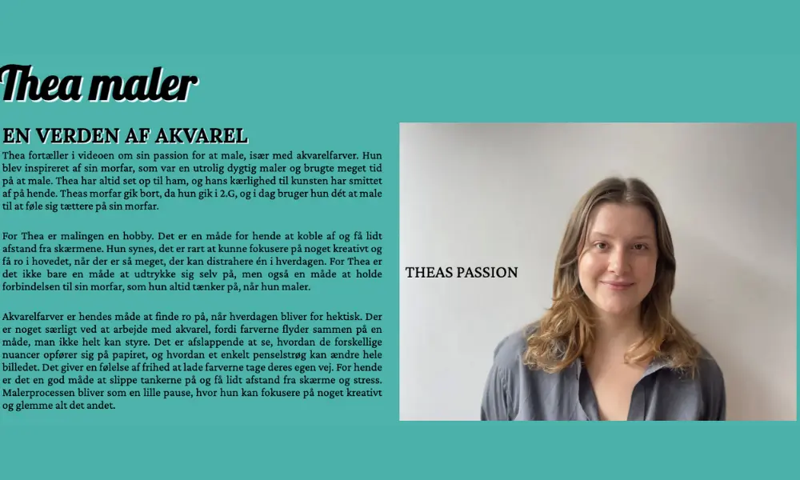
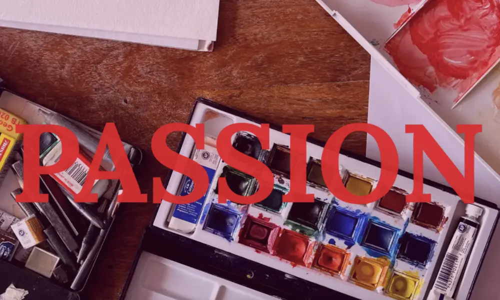
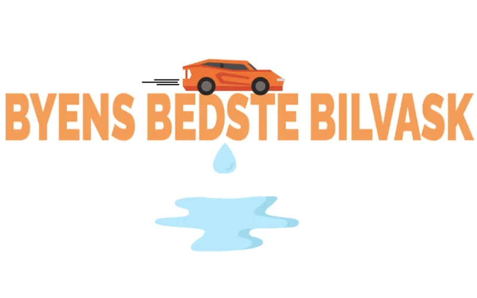
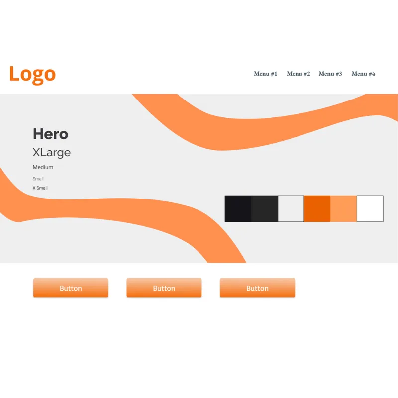
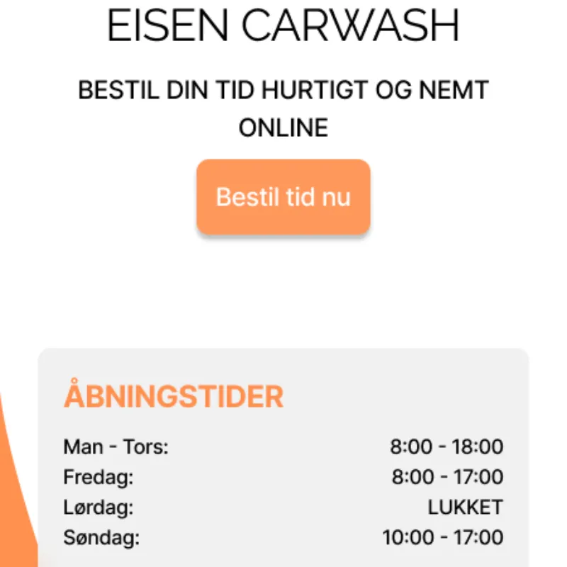
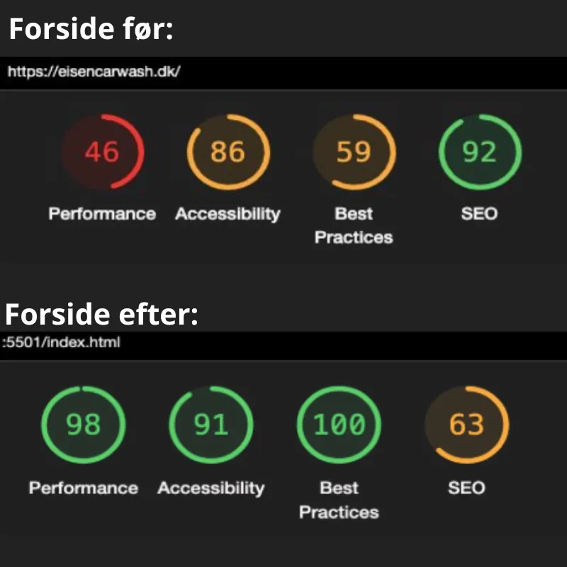

TEMA 5 -
GRUNDLÆGGENDE INDHOLD
En grundlæggende introduktion til indholdsproduktion. Der arbejdes med optagelse af video og ekstern lyd, og der er introduktion til Adobe Premiere Pro, Audition samt After Effects.
Passionssite proces

Dette forløb var vores første forløb med gruppearbejde. Vi blev delt ud i fire-mandsgrupper, og da forløbet var delt op i to dele, skulle vi sammen to og to i gruppen lave en passionsvideo og et passionssite.
Min makker og jeg fandt hurtigt frem til Thea, der har en passion for at male, og vi valgte hende som vores case. Vi tog derfor hjem til hende for at lave optagelser til vores video.
Til udarbejdelsen af videoen havde vi én telefon, der optog interviewet, én telefon vi optog ekstern lyd på og én telefon, hvor vi kunne tage billeder af hele setuppet.
Efter interviewet sørgede vi for at lave en masse b-roll-optagelser, vi kunne bruge i klipningen, ligesom vi også skød klip ud fra 5-skudsreglen. Vi brugte Premiere Pro til at klippe videoen, og rensede lyden ved hjælp af Audition.

Da videoen var klippet færdig, gik vi i gang med vores passionswebsite. Vi havde på forhånd fået udleveret wireframes til layouttet på sitet, som vi derfra selv skulle udarbejde layoutdiagrammer over.
Med disse på plads gik vi i gang med opbygningen af sitet. Vi blev introduceret til at lægge tekst ovenpå billeder og brugte Adobe After Effects til at arbejde med lottiefiles.
Fordelen ved at bruge lottiefiler på sit website er, at de er lette at implementere og de er mindre i filstørrelse uden at gå på kompromis med kvaliteten, hvilket er ideelt for et bæredytigt design.
Denne del af forløbet var især lærerigt i forhold til at samarbejde om at lave video og til arbejdet med lottiefiles.
Virksomhedssite proces
I anden del af forløbet skulle vi i vores fire-mandsgrupper arbejde med en selvvalgt virksomhed og redesigne deres website.
Vi valgte bilvaskevirksomheden Eisen Carwash. Dernæst lavede vi en oversigt i Trello over, hvad vi skulle igennem i vores arbejdsproces.
Vi startede med at tage ud til virksomheden og tale med ejeren.
Her indsamlede vi materiale til at kunne fastlægge vores målgruppe, vi fandt ud af, at ejeren ønskede at sitet skulle have orange farver, og så optog vi video, vi kunne brug på vores galleri-side.
Efter vores besøg hos Eisen Carwash gik vi i gang med at lave wireframes, layoutdiagrammer og fastlægge vores primære målgruppe.
På den måde kunne vi lægge os fast på et design til vores website. Vi fordelte siderne mellem os og gik i gang med at kode. Vi kunne arbejde sammen om koden med GitHub.
Rimelig hurtigt fik vi sitet på plads - med hjælp fra blandet andet en likert-test på vores logo, en 5-sekunders test af det originale site for at se, hvad der skulle forbedres og en lighthouse-test for at have konkrete tal at måle på i forhold til sitet før og efter.
Vi indarbejdede desuden en lottiefile på vores forside, en video i galleriet og en lille bil, der, ved hjælp af javascript, kørte hen over forsiden, når man scrollede ned.
Vi sendte herefter sitet til ejeren af Eisen Carwash, og han var meget glad og tilfreds med resultatet.
Virksomhedsprojektet mundede ud i en fremlæggelse ud fra pecha kucha-teknikken, hvor vi havde 20 sekunder til hvert slide i præsentationen, der skulle være 20 slides lang.
Den størte læring i forløbet var gruppearbejdet, den direkte kontakt med en virksomhed og arbejdet med github.



